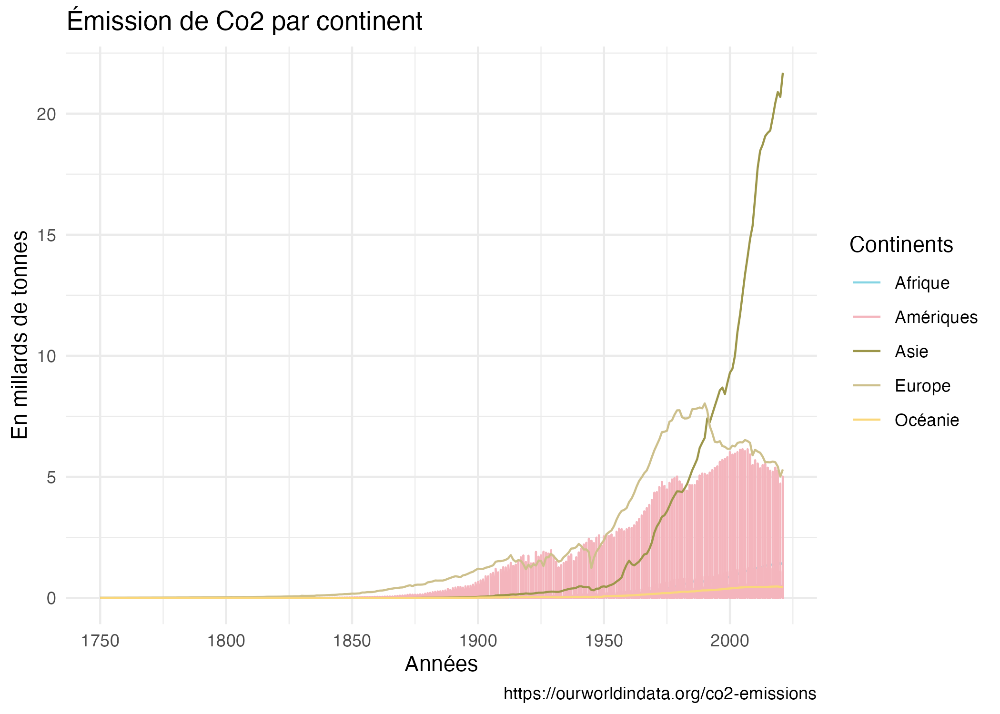
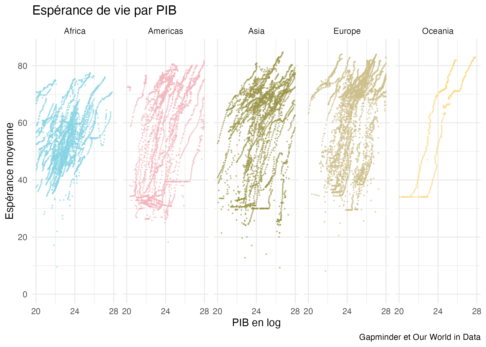

MANQUE RÉFÉRENCES À INCLURE
Introduction
Le document ci-dessous présente une analyse visuelle et descriptives des banques de données utilisées. En premier lieu, une analyse des banques de données de manière séparées pour terminer avec une courte analyse des banques de données mise ensemble.
À noter que la répartition des pays en continent peut présenter un biais. Notamment puisqu’entre l’Amérique du Nord, central et du Sud, il peut y avoir des disparités au niveau du développement, émissions de co2, etc. La même logique s’applique pour l’Asie ainsi que pour l’Océanie qui ne compte que l’Australie et la Nouvelle-Zélande.
Life Expectancy
Pour commencer, nous pouvons observer l’évolution de l’espérance de vie mondiale.
La banque de données qui a commencé à cummuler des données en 1800 et fait des prédictions basées sur la tendance actuelle jusqu’à 2100.

Ayant fait une moyenne de ceci, on s’aperçoit que l’espérance de vie moyenne mondiale à cette époque était d’environ 31 ans. L’augmentation de l’espérance de vie moyenne a été très lente, mais a augmenté drastiquement en à peine 100 ans passant de 35 ans en 1920 à plus de 80 ans en 2021.
Il est aussi possible d’observer certaines périodes historiques dans l’espérance de vie. Notamment la première cassure peut être associé à la période de la Premiere Guerre mondiale où l’espérance de vie moyenne a chuté de manière importante entre les années 1914 et 1920. De plus, suivant la Première Guerre mondiale, des nombreuses populations ont été touché par l’épidémie de la Grippe espagnole qui a également pu abaissé l’espérance de vie moyenne.
Une deuxième cassure peut être observé encore une fois suite à un événement d’envergure mondiale, soit la Seconde Guerre soit dans les années 1940. Plus récemment, on observe également la cassure de la pandémie de la COVID-19 qui est marqué dans le début des années 2020.
On peut également observé la tendance par continent. Est-ce que la population de certains continents vit plus longtemps que les autres et est-ce que cette tendance a changé dans le temps?
On remarque qu’ici, la tendance d’augmentation générale de l’espérance de vie moyenne est aussi valable pour tous les continents. Par contre, certains se démarquent davantage que les autres.

Notamment l’Europe qui semble avoir la meilleure espérance de vie et ce, même dans les prédictions. L’Afrique se retrouve au dernier rang, mais a connu une espérance de vie plus grande que les autres continents lors de la première cassure, soit la période de 1914 à 1920.
Our World in Data
Par la suite, nous pouvons regarder la banque de données produites par Our Wold in Data, notamment celle qui capture des données sur les émissions de Co2.
Celle-ci enmagasine des données de 1750 à aujourd’hui et est mise à jour régulièrement.
Similairement à la démarche émise pour les données du Life Expectancy nous commençons par démontrer l’évolution des émissions de Co2 à un niveau planétaire.

L’échelle située à la droite du graphique estime l’émission de Co2 en milliard de tonnes. Similairement à la tendance observée pour l’espérance de vie moyenne, l’émission de Co2 était relativement stable de 1750 jusqu’au début du 20e siècle. Elle a quadruplée en 55 ans, passant d’environ 2,5 millards de tonne en 1900 à plus de 10 milliards de tonne dans les années 1960.
L’augmentation de l’émission de Co2 mondiale a ensuite été rapide en peu de temps, comptabilisant aujourd’hui plus de 37 milliards de tonne de Co2 mondialement par année.
Ton comme par l’espérance de vie, certains continents vont se démarquer des autres.

On remarque ici que l’Asie a notamment connu un essort important et rapide, dépassant l’Europe et les Amériques alors qu’ils étaient ceux enregistrant les plus fortes émissions auparavant. L’Asie regroupe également 2 des 5 plus grands pollueurs du monde en 2021 soit la Chine et l’Inde.
Données combinées
Pour les données combinées nous nous sommes posées une question bien simple soit : est-ce que le PIB d’un pays à un effet sur l’espérance de vie des ces citoyens ? Le PIB semble être un bon indicateur de développement économique (bien qu’il comprend ces biais), mais pourrait notamment nous indiquer une référence du développement du système de santé du pays, des installations sanitaires, etc.

Dans ce graphique, on peut apercevoir sur l’axe des y l’espérance de vie moyenne et sur l’axe de x le PIB qui est exprimé en logarithmique. Chaque ligne représente un pays, chaque point une année, le tout regroupé par continent.
On remarque ainsi qu’il y a une tendance positive, soit que plus le PIB est élevé, plus les habitants vivent longtemps. Par exemple:
Les données proviennent entre autres de Ritchie, Roser, et Rosado (2022).
Les références
Citation
@online{leblanc2023,
author = {Juliette Leblanc},
title = {Analyses},
date = {2023-09-12},
url = {https://VOTREUSERNAME.github.io/FAS1002_projet-final//intro.html},
langid = {fr}
}